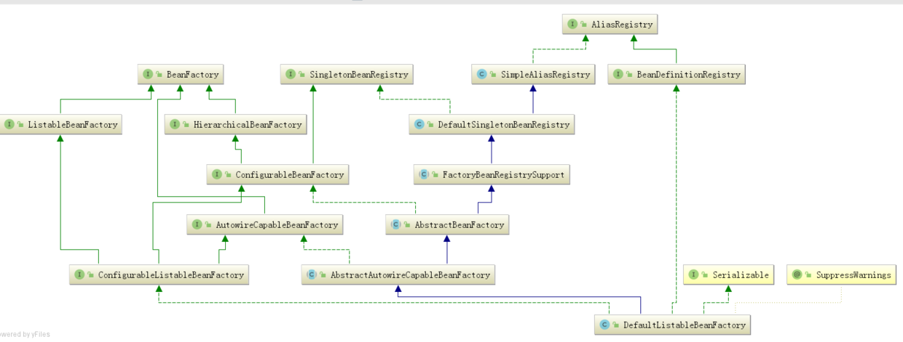
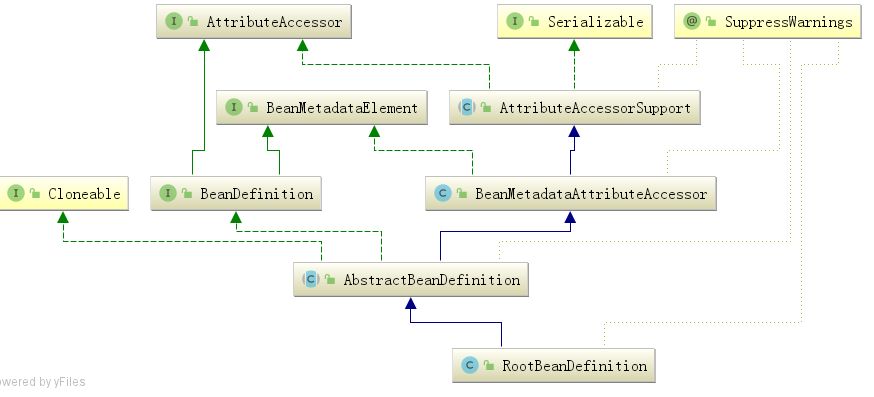

剖析SPRING-IOC源码（一）
花了3天时间来看源码，还是有点收获的，今天就来再次解析一次，就当是巩固
可能对于上一篇文章有点不满意，所以又重新进行一个spring-ioc源码的分析，话不多说，我们开始。
这里先提前说一下什么Bean，什么是java对象，经过完整生命周期称为bean，也就是Spring Bean而java对象则是new出来的。Bean一定是java对象，而java对象不一定是Bean，简单的说就是bean是被spring管理的java对象
首先我们先初始化Spring
//初始化Spring 上下文 容器 环境
AnnotationConfigApplicationContext context =
new AnnotationConfigApplicationContext(AppConfig.class);当然有的人是用后面这种方法，不过都一样的，都可以初始化，只是用后面这种方法是基于Xml构建你的spring
ClassPathXmlApplicationContext classPathXmlApplicationContext =
new ClassPathXmlApplicationContext("spring.xml");由于现在JavaConfig风格+注解的方式来使用Spring，是Spring官方主推的，也是现在的主流方式，所以我们这里用第一种方法。
创建AnnotationConfigApplicationContext对象，首先会跑到这里：
public AnnotationConfigApplicationContext(Class<?>... annotatedClasses) {
//调用无参构造函数，会先调用父类GenericApplicationContext的构造函数
//本类的构造函数里面，初始化了一个读取器：AnnotatedBeanDefinitionReader read，一个扫描器ClassPathBeanDefinitionScanner scanner
this();
//把传入的类进行注册，这里有两个情况，
//传入传统的配置类
//传入bean
//看到后面会知道spring把传统的带上@Configuration的配置类称之为FULL配置类，不带@Configuration的称之为Lite配置类
//但是我们这里先把带上@Configuration的配置类称之为传统配置类，不带的称之为普通bean
register(annotatedClasses);
//刷新
refresh();
}这个方法第一眼看上去，很简单，但是这三行代码包含了大千世界。
第一行代码解析
我们先来看第一行代码，通过this()的无参构造方法，他会跑到这里
public AnnotationConfigApplicationContext() {
//初始化一个Bean读取器
this.reader = new AnnotatedBeanDefinitionReader(this);
//初始化一个扫描器，它仅仅是在我们外部手动调用 .scan 等方法才有用，常规方式是不会用到scanner对象的
this.scanner = new ClassPathBeanDefinitionScanner(this);
}只有两行代码，但是不能直接看这两行代码，为什么呢？
因为我们的AnnotationConfigApplicationContext他有父类，它会调用父类里的参构造方法
public GenericApplicationContext() {
this.beanFactory = new DefaultListableBeanFactory();
}这个代码很简单，就是初始化了DefaultListableBeanFactory。
接下来我们就来看看DefaultListableBeanFactory的关系图

DefaultListableBeanFactory是相当重要的，从字面意思就可以看出它是一个Bean的工厂，什么是Bean的工厂？当然就是用来生产和获得Bean的。这个我上篇文章也讲过，不懂得可以看看。
先回到AnnotationConfigApplicationContext的无参构造方法，让我们看看Spring在初始化AnnotatedBeanDefinitionReader的时候做了什么：
public AnnotatedBeanDefinitionReader(BeanDefinitionRegistry registry) {
this(registry, getOrCreateEnvironment(registry));
}这里的BeanDefinitionRegistry当然就是AnnotationConfigApplicationContext的实例了，这里又直接调用了此类其他的构造方法：
public AnnotatedBeanDefinitionReader(BeanDefinitionRegistry registry, Environment environment) {
Assert.notNull(registry, "BeanDefinitionRegistry must not be null");
Assert.notNull(environment, "Environment must not be null");
this.registry = registry;
this.conditionEvaluator = new ConditionEvaluator(registry, environment, null);
AnnotationConfigUtils.registerAnnotationConfigProcessors(this.registry);
}看到这个方法的最后一行，进入registerAnnotationConfigProcessors方法：
public static void registerAnnotationConfigProcessors(BeanDefinitionRegistry registry) {
registerAnnotationConfigProcessors(registry, null);
}再点进去，这个方法的返回值Set，但是上游方法并没有去接收这个返回值，所以这个方法的返回值也不是很重要了，当然方法内部给这个返回值赋值也不重要了。由于这个方法内容比较多，这里就把最核心的贴出来，这个方法的核心就是注册Spring内置的多个Bean：
if (beanFactory != null) {
if (!(beanFactory.getDependencyComparator() instanceof AnnotationAwareOrderComparator)) {
beanFactory.setDependencyComparator(AnnotationAwareOrderComparator.INSTANCE);
}
if (!(beanFactory.getAutowireCandidateResolver() instanceof ContextAnnotationAutowireCandidateResolver)) {
beanFactory.setAutowireCandidateResolver(new ContextAnnotationAutowireCandidateResolver());
}
}
if (!registry.containsBeanDefinition(CONFIGURATION_ANNOTATION_PROCESSOR_BEAN_NAME)) {
RootBeanDefinition def = new RootBeanDefinition(ConfigurationClassPostProcessor.class);
def.setSource(source);
beanDefs.add(registerPostProcessor(registry, def, CONFIGURATION_ANNOTATION_PROCESSOR_BEAN_NAME));
}- 判断容器中是否已经存在了ConfigurationClassPostProcessor Bean
- 如果不存在，就通过RootBeanDefinition的构造方法获得。
- 执行registerPostProcessor方法，registerPostProcessor方法内部就是注册Bean，当然这里注册其他Bean也是一样的流程。
太难了，这不就是我上一篇讲的知识嘛— —
ConfigurationClassPostProcessor的BeanDefinition，RootBeanDefinition是BeanDefinition的子类：

那么问题来了，BeanDefinition是什么？
顾名思义，它是用来描述Bean的，里面存放着关于Bean的一系列信息，比如Bean的作用域，Bean所对应的Class，是否懒加载，是否Primary等等，这个BeanDefinition也相当重要，我们以后会常常和它打交道。
registerPostProcessor方法：
private static BeanDefinitionHolder registerPostProcessor(
BeanDefinitionRegistry registry, RootBeanDefinition definition, String beanName) {
definition.setRole(BeanDefinition.ROLE_INFRASTRUCTURE);
registry.registerBeanDefinition(beanName, definition);
return new BeanDefinitionHolder(definition, beanName);
}这方法为BeanDefinition设置了一个Role，ROLE_INFRASTRUCTURE代表这是spring内部的，并非用户定义的，然后又调用了registerBeanDefinition方法，
再点进去，你会发现它是一个接口，没办法直接点进去了，首先要知道registry实现类是什么，那么它的实现是什么呢？答案是DefaultListableBeanFactory：
void registerBeanDefinition(String beanName, BeanDefinition beanDefinition)
throws BeanDefinitionStoreException;再点进去，核心在于下面两行代码：
//这里就是把beanName作为key，ScopedProxyMode作为value，推到map里面
this.beanDefinitionMap.put(beanName, beanDefinition);
//beanDefinitionNames就是一个List<String>,这里就是把beanName放到List中去
this.beanDefinitionNames.add(beanName);从这里可以看出DefaultListableBeanFactory就是我们所说的容器了，里面放着beanDefinitionMap，beanDefinitionNames，beanDefinitionMap是一个hashMap，beanName作为Key,beanDefinition作为Value，beanDefinitionNames是一个集合，里面存放了beanName
这里仅仅是注册，可以简单的理解为把一些原料放入工厂，工厂还没有真正的去生产。
上面已经介绍过，这里会一连串注册好几个Bean，在这其中最重要的一个Bean（没有之一）就是BeanDefinitionRegistryPostProcessor Bean。
ConfigurationClassPostProcessor实现BeanDefinitionRegistryPostProcessor接口，BeanDefinitionRegistryPostProcessor接口又扩展了BeanFactoryPostProcessor接口，BeanFactoryPostProcessor是Spring的扩展点之一，ConfigurationClassPostProcessor是Spring极为重要的一个类，必须牢牢的记住上面所说的这个类和它的继承关系。
BeanPostProcessor接口也是Spring的扩展点之一。
好了，到这里实例化AnnotatedBeanDefinitionReader 已经分析完毕。
因为常规使用方式是不会用到AnnotationConfigApplicationContext里面的scanner的，所以这里就不解析scanner是如何被实例化的了。
第二行代码解析
接下来开始分析第二行代码
register(annotatedClasses);这里传进去的是一个数组，最终会循环调用如下方法：
@SuppressWarnings("unchecked")
public void registerBean(Class<?> annotatedClass, String name, Class<? extends Annotation>... qualifiers) {
//AnnotatedGenericBeanDefinition可以理解为一种数据结构，是用来描述Bean的，这里的作用就是把传入的标记了注解的类转为AnnotatedGenericBeanDefinition数据结构，里面有一个getMetadata方法，可以拿到类上的注解
AnnotatedGenericBeanDefinition abd = new AnnotatedGenericBeanDefinition(annotatedClass);
//判断是否需要跳过注解，spring中有一个@Condition注解，当不满足条件，这个bean就不会被解析
if (this.conditionEvaluator.shouldSkip(abd.getMetadata())) {
return;
}
//解析bean的作用域，如果没有设置的话，默认为单例
ScopeMetadata scopeMetadata = this.scopeMetadataResolver.resolveScopeMetadata(abd);
abd.setScope(scopeMetadata.getScopeName());
//获得beanName
String beanName = (name != null ? name : this.beanNameGenerator.generateBeanName(abd, this.registry));
//解析通用注解，填充到AnnotatedGenericBeanDefinition，解析的注解为Lazy，Primary，DependsOn，Role，Description
AnnotationConfigUtils.processCommonDefinitionAnnotations(abd);
//限定符处理，不是特指@Qualifier注解，也有可能是其他（理论上是任何注解，这里没有判断注解的有效性），如果我们在外面，以类似这种
//AnnotationConfigApplicationContext annotationConfigApplicationContext = new AnnotationConfigApplicationContext(Appconfig.class);常规方式去初始化spring，
//qualifiers永远都是空的，包括上面的name和instanceSupplier都是同样的道理
//但是spring提供了其他方式去注册bean，就可能会传入了
if (qualifiers != null) {
//可以传入qualifier数组，所以需要循环处理
for (Class<? extends Annotation> qualifier : qualifiers) {
//Primary注解优先
if (Primary.class == qualifier) {
abd.setPrimary(true);
}
//Lazy注解
else if (Lazy.class == qualifier) {
abd.setLazyInit(true);
}
//其他，AnnotatedGenericBeanDefinition有个Map<String,AutowireCandidateQualifier>属性，直接push进去
else {
abd.addQualifier(new AutowireCandidateQualifier(qualifier));
}
}
}
//把AnnotatedGenericBeanDefinition数据结构和beanName封装到一个对象中
BeanDefinitionHolder definitionHolder = new BeanDefinitionHolder(abd, beanName);
definitionHolder = AnnotationConfigUtils.applyScopedProxyMode(scopeMetadata, definitionHolder, this.registry);
//注册，最终会调用DefaultListableBeanFactory中的registerBeanDefinition方法去注册
//DefaultListableBeanFactory维护着一系列信息，比如beanDefinitionNames，beanDefinitionMap
//beanDefinitionNames是一个List<String>,用来保存beanName
//beanDefinitionMap是一个Map,用来保存beanName和beanDefinition
BeanDefinitionReaderUtils.registerBeanDefinition(definitionHolder, this.registry);
}在这里又要说明下，以常规方式去注册配置类，此方法中除了第一个参数，其他参数都是默认值。
1通过AnnotatedGenericBeanDefinition的构造方法，获得配置类的BeanDefinition，这里是不是似曾相似，在注册ConfigurationClassPostProcessor类的时候，也是通过构造方法去获得BeanDefinition的，只不过当时是通过RootBeanDefinition去获得，现在是通过AnnotatedGenericBeanDefinition去获得。
判断需不需要跳过注册，Spring中有一个@Condition注解，如果不满足条件，就会跳过这个类的注册。
这是上面代码的最后一步，也就是注册：
（调用DefaultListableBeanFactory中的registerBeanDefinition方法去注册）
public static void registerBeanDefinition(
BeanDefinitionHolder definitionHolder, BeanDefinitionRegistry registry)
throws BeanDefinitionStoreException {
// Register bean definition under primary name.
String beanName = definitionHolder.getBeanName();
registry.registerBeanDefinition(beanName, definitionHolder.getBeanDefinition());
// Register aliases for bean name, if any.
String[] aliases = definitionHolder.getAliases();
if (aliases != null) {
for (String alias : aliases) {
registry.registerAlias(beanName, alias);
}
}
}